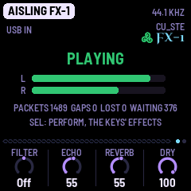

aisling fx-1 · an M-VAVE FM-1 as a USB effects box
by CU_STE · www.stephen8n.com
1.0, released. Its package, aislingfx-1.0.fwsc, is on
the 1.0 release. There is no install page for it yet: it goes on with the
command-line installer, as the manual says. It has run on one FM-1 so
far. The way back is the usual one: install AISLING, or the stock firmware.
AISLING FX-1 is AISLING with its voices taken out and a computer's sound let in. Connect an M-VAVE FM-1 to a computer by USB and choose AISLING FX-1 as the sound output: whatever the computer plays comes in over the cable, goes through AISLING's filter, echo and plate reverb and the effects on its keys, and comes out of the FM-1's 3.5 mm socket. It goes back up the cable too, for the computer to record.



How it goes
- Put FX-1 on the FM-1: download
aislingfx-1.0.fwscfrom the release and install it withtools/fm1_install.py, over AISLING, another firmware or the stock one. - Connect the FM-1 to the computer with a USB data cable. It shows up as a sound device, AISLING FX-1.
- Make it the computer's sound output, or a track's in your music software, and play something. The screen says PLAYING and its meters move.
- Listen at the FM-1's socket. At HOME the knobs are the Filter, the Echo, the Reverb and the Dry; in PERFORM (SEL) the keys are effects while held.
- To record what comes out, choose the FM-1 as the computer's input as well.
Tried, and not yet
- On the FM-1: the sound plays with no gaps and no packets lost, it sounds right, the screen keeps up, and turning the Dry down leaves the effects' share as it was. It went on over AISLING and over the stock firmware, and AISLING went back over it with its pieces as they were.
- In the simulator, every control and key measured: 17 of PERFORM's 27 effects change a computer's sound, and four of the black keys' eleven (the rest were made for AISLING's own voices). The manual and the controls drawing say which.
- Not yet: how late the sound comes out (the latency), a long session on the FM-1, and a newer FM-1.
- To know: FX-1 doesn't save by itself (hold GLO to save), and saves where AISLING does, as AISLING's piece; Setup's sleep timer, if set, quiets the socket while the computer still plays.
The manual keeps this list as it changes.
AISLING FX-1 is AISLING's own code with a second USB sound stream, the one coming in, and the voices left out; everything else is AISLING's, a fork of NACHTFAHRT by FartyPants by way of DUB-1 and AMB-1, on Felucca by Leo Kuroshita (Hügelton Instruments). GPL-3.0. M-VAVE and FM-1 are trademarks of their owners; AISLING is not affiliated with M-VAVE.